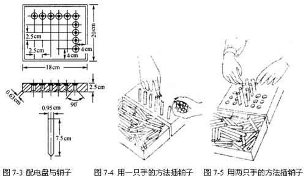
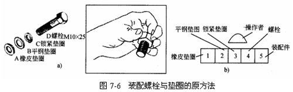

动作经济原则分析
动作经济原则有两大功用：①帮助发掘问题；②提供建立新方法的方向。任何工作中的动作，凡合乎这些原则的，皆为经济有效的动作，否则，就应改进。这22条原则还可以进一步归纳为十条原则，
下面将对这些原则进行分析。
第一条原则：双手的动作应同时而对称。
在关于人体的运用的8条原则中，实际上可进一步归纳，如其中的第1条、第2条及第3条互相关连，均为双手的动作，可以把它们合并为第一条原则：即双手的动作应同时而对称。
例如：将30只销子，插入如图7-3所示有30个孔的配电盘中。
一般的做法是右手从装销子的盒子内，抓取一把销子，交给左手，左手握一把销子，然后右手一次一个地将销子插入配电盘的孔内，如图7-4所示，插完30只销子需30s。
如果双手同时做取销子和插销子的动作，就可取消左手“握住”的动作，使左手也像右手一样地做有用的动作，如图7-5所示。两手同时对称动作取插30只销子只需23s，节约时间29%。这也说明了双手同时动作较单手操作节省时间。

在配电盘上插销子的动作图解及动素符号表示如表7-2。
例如：在某项产品的总装配中，需将M10×25的螺栓装上3只垫圈组成组件。
将M10×25的螺栓装上3只垫圈组成组件的原方法如图7-6所示。

按原有的方法，其装配次序是把放置螺栓、锁紧垫圈、平钢垫圈和橡胶垫圈的小盒子成一字形排列在钳工台上，如图7-6b，然后装配工伸左手到放置螺栓的盒子里取出一个螺栓，把它拿到自己的正前方，再用右手从锁紧垫圈盒内拿出一个锁紧垫圈并把它套到螺栓上，依次重复此动作套上钢垫圈和橡皮垫圈。最后把装配完成的组件放到操作者左边的5号箱内，其动素程序图见表7-3，用这种办法每分钟能完成12个装配组件。由动素程序图可见，在此整个操作过程中，左手绝大多数的时间用在持住螺栓上，而由右手单独动作。这种动作，左右手既不同时利用，也不对称。
根据节约动作的第一条原则，即双手的动作应该是同时的和对称的，来改进原有方法。用木料做一个简单的夹具，在夹具的正前面设计有两个沉头孔，如图7-7，（图中只画出其中一个）。两个沉头孔尺寸相同，每个沉头孔中可以松松地放进垫圈。夹具中有一个略大于螺栓直径的通孔，木制夹具两边是两个金属板做成的滑料槽，其开口分别在两沉头孔左右侧。因此，装配完成的螺栓组件便可顺手丢进滑运槽的入口，并被滑入装配台下的容器中，如图7-8所示。在夹具周围成对放置装有三种垫圈的重力供料式金属盒，盒内分别放橡胶垫片、平钢垫圈及弹簧锁紧垫圈，中间的4号盒内放螺栓。每一个盒的底部都做成前倾30°的斜面溜板，这些零件便可借助于本身重量的作用被输送到装配台的台面上等待装配。这样两手可以同时动作，即为两个螺栓配垫圈。
装配时，双手同时各自①处取一橡胶垫圈，放入装配槽⑤内；双手同时各自②处取一平垫圈，放入装配槽⑤内；双手同时各自②处取一弹簧垫圈，各自放入装配槽⑤内；双手同时各自④处取一螺栓，插入装配槽⑤的两孔内；双手同时拿起螺栓，各自放入左右端的洞⑥内，组件即自动落入滑运槽滑入成品箱。
改良后装配螺栓与垫圈组件的动素程序图如表7-4所示。
改进后，由于橡胶垫圈的孔略小于螺栓直径，因此螺栓压入橡胶垫圈孔后，即被夹住，即使螺栓被垂直提起，这些垫圈也不会松脱。另外，操作者是从零件盒将垫圈滑移到夹具装置的装配槽⑤内，也比操作者将垫圈拿起再带到装配槽⑤节约一半时间。
实际操作中，新方法与老方法的对比如下：
平均装配一件的时间由0.084min降到0.055min，节省了35%。每分钟产量由11.9件增加到18.2件，增加产量53%。
第二条原则：人体的动作应以尽量应用最低级而能得到满意结果为妥。
关于人体的运用的第4条：人体的动作应以尽量应用最低级而能得到满意结果为妥，可以做为第二条原则。
工作时人体的动作可分为5级，如表7-5。
表7-5 人体的动作等级
|
级别 |
运动枢轴 |
人体运动部位 |
|
1 |
指节 |
手指 |
|
2 |
手腕 |
手指及手腕 |
|
3 |
肘 |
手指、手腕及小臂 |
|
4 |
肩 |
手指、手腕、小臂及大臂 |
|
5 |
身体 |
手指、手腕、小臂、大臂及身体 |
第1级手指动作：这是级次最低、速度最快的动作。最典型的例子是将螺母旋入螺栓上，或用手指按下打字机键盘，或抓取一种小零件等。各个手指的动作速度也有差别，食指一般比其他手指快。因此，设计工具时应考虑这一点。但手指动作的力量最弱，故需力量较大的动作时，就必须考虑使用高级次的动作。
第2级手指、手腕动作：上臂及肘均保持不动，仅手指和手腕移动。典型动作是取两个正待装配的小零件对准，或取某零件在夹定器上对准。在极短距离内，动素中的伸手及移物应为第2级动作。
第3级手指、手腕及小臂动作：动作限制在肘部以下，肘以上不动。这一级动作通常被当作不致引起疲劳的有效动作。动素中的伸手及移物，属此动作。
第4级手指、手腕、小臂及大臂动作：零件、材料、工具离作业地点较远，非第3级动作所能达到，必须有伸臂的动作。其动作的所需时间随动作距离及所克服的阻力而定。
第5级手指、手腕、前臂、上臂及身体动作：最耗体力，也是最缓慢的动作。身体的动作包括了足、踝、膝、大腿、躯干的动作，所以这一动作己使动作位置变更。
将以上5级动作比较可见，动作级次越低，所需时间越短，所耗体力越小。应用证明，第5级动作是最不经济的动作。但应注意，第1级动作也不是在任何操作中最省力、最有效的动作。在许多情况下，第3级动作被认为是最有效的动作。
总的说来，要使动作迅速而轻易，只有从缩短动作的距离以及减少动作所消耗的体力着手。为此，就必须选择级次最低的动作，使工作距离缩短，使材料、工具、零件尽可能靠近工作地。
因此，工作地布置应依工序排成连续不断的线。所谓连续不断的线，就是第一人完成的工件放置处，即为第二人伸手取物处。这样，所有工作都无须操作者起立走动、搬运材料及零件。
例1：电灯开关面板设计。
电灯开关面板设计如图7-9所示，旧式开关操作时需上下拨动，属第2级动作，而目前新式开关操作时只需用手指压下，属第1级动作。
例2：办公桌的设计。
图7
图a所示办公桌：如使用最下层抽屉，必须弯腰，为5级动作。
图b所示办公桌：最下端的浅抽屉，改为资料柜，伸手可达。
图c所示办公桌：常为高层主管办公桌，桌面宽而长，桌面外侧(有网线部分)因较远，取物时必须倾身或半站姿势，为5级动作，较为费力。
图d所示办公桌：将办公桌c的外侧(深颜色部分)移至左侧或右侧，此时所有桌面全在伸长可达范围，4级动作即可达到。
第三条原则：尽可能利用物体的动能，曲线运动较方向突变的直线运动为佳，弹道式运动较受控制的运动为快，动作尽可能使之有轻松的节奏。
关于人体的运用的第5条、第6条、第7条及第8条均互相关联，可合并为第三条原则：尽可能利用物体的动能，曲线运动较方向突变的直线运动为佳。弹道式运动较受控制的运动轻快，动作尽可能使之有轻松的节奏。
(1)工作物运动时，自然产生动能。工作时，应充分运用此种自然产生的动能来改进工作。
例如，图7-11是一种工人挥动大铁锤的方法，其最佳效果的效率为9.4%，因当铁锤向上移动时，其所产生的动能未被利用，而全为肌肉所制止。
如果改为图7-12所制的圆弧型挥动，即后面挥上，前面打下。因后面挥上时所产生的动能，可完全用以帮助自前面打下，故而肌肉不易疲劳，其效率可达20.2%。
(2)连续曲线运动，较方向突变的直线运动为佳。
由图7-13可见，直线方向的突变运动，由A点起，须肌肉用力前推，产生加速度前进。到B点因要改变方向，故在到达B点前应减速，到B点才可停止。由B到C时，又需再使肌肉用力前推，产生加速度前进。亦即每到方向突变之点的前面，必须用肌肉制止速度，而使速度为零。转向新方向时又必须用力前推，产生加速度前进。由于不断产生加速与减速，肌肉一推一拉，容易疲劳，同时因必须停止才能转变方向，时间上也产生延迟。
连续曲线运动，除开始时A点产生加速度外，其他各点均不用速度减为零停止，所以运动圆滑快速，省力而不疲劳。
(3)弹道式运动，较受限制的运动轻快。
根据生理学的研究，人手(手与身体)的运动是由两组肌肉控制的，一组是推向前，另一组是拉向后，此两组肌肉互相协调，推前与拉后的力量相等时，即达到平衡，手就停止不动。所谓弹道式运动，就是在前推(或后拉)之后，不再运用后拉(或前推)的肌肉，即节省了一半的力量。在弹道式运动中，一经用力后就不加限制，而利用其产生的动能来工作。所以动作研究人员总是将动作直线的走向改成曲线或弹道式走向。
例如锻工使用手锤时，有经验的工人常常仅当锤举起或刚下落时用力，锤行至半途即放松肌肉，使其自然下落(依靠自然产生的势能)以求省力。
(4)动作应尽可能使用轻松自然的节奏。
节奏能使动作流利自发，自然节奏是人类的习惯与天性。大多数从事重复性操作的人，都喜欢把操作安排得流畅、轻松地从一个动作过渡到另一个动作，并且按节拍进行，因为这样会得到提高效率、减少疲劳的效果。
第四条原则：工具、物料应置于固定处所及工作者前面近处，并依最佳的工作顺序排列。
动作经济原则的第9条、第10条、第13条均属工具和物料的放置的原则，可合并为第四条原则，即工具、物料应置于固定处所及工作者前面近处，并依最佳的工作顺序排列。
(1)工具、物料应置于固定处所。
在17个动素中，寻找是属于非生产性的浪费动素，应设法予以消除或减少。在操作中，如果工具和物料没有固定的位置，则操作者势必在每一操作周期中都要浪费部分时间在寻找，耗费精力。而工具和物料有明确而又固定的存放地点时，可以促使人养成习惯和迅速的反应。实际上，当要用手去拿某物料(或工具)之前，总是用眼睛指引手伸向目标。如果工具和物料有明确而固定的地点，则不需用眼睛注视，手就会自动地找到正确的位置。
例如，我们在黑夜回家，屋里暗得什么也看不见，但当我们一打开门，手就会自动地伸向电灯开关而不需用眼寻找一样。汽车驾驶员在公路上驾驶汽车，转转向盘、换挡、制动时，眼睛始终不离开前方，就是因为不需眼睛注视就可以正确地操作，这样，眼睛就可以作其他的用途了。
(2)工具、物料依照较佳的工作顺序排列。
工具及物料依一定的次序放置，可使操作者养成按照最佳顺序工作的习惯。操作者可以不经考虑思索而顺利进行工作，能以较小的精力达到工作目的。
例如，在装配工作中，各种零件按装配顺序排列。在机械加工中，材料、毛坯和半成品，都按工作顺序整齐排列。工具和机器设备附件都各有特制的箱、盒整齐摆放。量具和刀具分开放置，常用工具离操作者最近等。这些都有利于减少工作疲劳，提高工作效率。
(3)工具、物料及装置应布置在工作者的前面近处。
根据“人体之动作应以最低的等级而能得到满意的结果为妥”的原则，工具及物料应布置在使人能运用第3级动作的范围，最大亦只能在第4级动作的范围。
人体第3级动作的范围，是以左、右手自然下垂，以肘为中心、小臂为半径所能达到的空间范围，称“正常工作范围”，见图7-14和图7-15。人体第4级动作范围，是以肩为中心，整个手臂为半径所能达到的空间范围，称为最大工作范围，见图7-16。图7-15为水平面上，即人坐着操作时，手在水平面上移动的正常工作区域。图7-16为水平面上最大及正常工作范围。
在一般情况下，工作台上的布置，常将零件(或零件箱)成一字排列，并且放置在最大工作范围之外，远离夹具及操作者，如图7-17所示，每次拿起零件时，操作者均需附身，增加了操作者的疲劳。
正确的布置应该如图7-18所示。零件匣在适合人体双手操作的工作区域内，靠近操作者及夹具，操作者以3级动作即可取到零件，零件匣紧靠并集中于操作者的正前方。图中的A角应越小越好，而距离r应越短越好。A角最好在“正常视角”以内，正常视角即操作者头不动，两眼向前直视时，所能看到的最大视觉范围。
图7-19为装配操作工作台布置方式。其中，图(a) 的布置方式，成品箱位于正常视角内，但两材料箱则置于正常视角以外。当人以手取物时，必先用眼注视该物，然后手才按眼的引导方位而伸手取该物。而当物件放置在正常视角以内时，双手同时动作是很容易做到的，但如果物件置于正常视角以外，则双手同时取物就难以完成。
图(b)的布置方式，如果完成件可以随便丢入成品箱时，因双手可以同时动作，效率较高；但如果完成件必须在成品箱内依次排列整齐时，则因双手不能同时动作，而使工作效率降低。
图(c)的布置方式最佳，因为材料箱及成品箱均位于正常视角之内，便于双手同时动作。材料箱及成品箱布置均成圆弧形，以适应双手的动作范围，且材料箱为斜底，使材料尽可能倾进到操作者前面的近处。
第五条原则：零件、物料应尽可能利用其重量坠送至工作者前面近处。
关于工作地布置中的第11条，零件、物料的供给，应利用其重量坠至工作者的手边及第13条坠放方法，应尽可能合并为一条原则。即第五条原则：零件、料物应尽量利用其重量坠送至工作者前面近处。
要节省时间，必须使工具、物料离操作者近。但由于材料的堆放数量不能太少，否则补充物料的次数频繁，更不经济。数量多则堆放面积增大，因而往往有部分的料超出正常或最大动作范围之外。解决的办法是利用重力滑箱，使零件或物料利用自身的重力，斜滑到操作者的前面近手处。完成的工件，亦利用重力滑槽自动坠送至适当位置。
第六条原则：应有适当的照明，工作台及坐椅式样及高度应使工作者保持良好的姿势及坐立适宜。
关于工作地布置中的第14条、第15条及第16条，可合并为一条原则，即第六条原则：应有适当的照明设备，工作台及坐椅式样及高度应使工作者保持良好的姿势及坐立适宜。
(1)适当的照明可改善精细工作的视力疲劳。图7-20所示为某工厂装配电表工作台，原来装配一只电表需45min，且因为有些零件很小，需靠近眼睛才能看清，使眼睛过份疲劳而影响效率。照明设备经以下改善后，效率大为提高。台面上B为背影光线，选用暗白色或浅黄色为宜，应避免刺眼的光。当需用直接光照明时，踩下踏板E，灯A即打开。
(2)关于坐椅及工作台。图7-21所示为一良好设计的坐椅。工厂企业及机关广泛使用的工作台、工作椅，必须与使用者的各部位尺寸相吻合。合适的坐椅应使坐者的重量压在臀部和骨架上，坐椅的高度应稍低于小腿高。桌面的高度应与肘高相平，且桌面高应与一定的椅高相适应，这样作业者会感到舒适，可提高工效。
图7-22为桌面与坐椅高度的关系，桌面应使在工作时小臂处于水平位置，若肘部低于桌面，则桌面的前沿压着小臂，会引起不舒服，桌面过低会使人驼背，对工作亦不利。站立工作时，桌面也应与肘相平。
第七条原则：尽量解除手的工作，而以夹具或足踏工具代替。
关于工具设备的第17条可专门作为一条原则，即第七条原则：尽量解除手的工作，而以夹具或足踏工具代替。
在操作过程中，常发生手在做持住的工作，把时间和力量用在非生产性的动作中。应设计出适当的钻具和夹具，以代替手去执行持住的动作，而双手去做其他具有生产性的动作。钻具是能夹持零件于精确位置，且能引导加工的工具。夹具则指夹持零件的器具。设计钻具和夹具时，应周密考虑其持住作用能否确切完成，是否会妨碍手的某些操作；还可以考虑以足踏代替手执行持住操作使双手同时可做捡取和加工的动作，在一个周期内完成双倍的产量。在实际生产中，因为人的左、右两手的工作效率是不同的，一般人的左手比右手慢9%，且双手操作比单手操作的能量消耗增加，故双手操作并没有完全达到单手操作的两倍。
图7-23所示是改装成为脚操纵的普通台式虎钳。踩下脚踏板B，钳口A就张开；放松踏板，弹簧C收缩，连杆D使钳口将工件夹紧。当生产中需较大的夹持力时，可将弹簧改为带有压缩空气的活塞来驱动虎钳的钳口，而压缩空气仍由脚踏阀来控制。
图7-24为脚操纵的焊接烙铁。图中的电烙铁A用脚踏板B来升降。脚往下踩，烙铁A降下，焊接点焊好后脚松开，烙铁抬起，同时压缩空气管道上的阀门C打开，放出空气吹冷焊接点。
图7-25为脚踏式的盥洗用具，可使双手自由活动并可避免沾污。
第八条原则：可能时，应将两种或两种以上工具合并为一。
关于工具设备的第18条原则可专门作为一条原则，即第八条原则：可能时，应将两种或两种以上工具合并为一。
此原则应用范围相当广泛，且极受欢迎。将两端各有一种用途的手工工具掉头使用，总比放下手中的工具，再去寻找握取另一工具省时省力。在日常生活中，红蓝铅笔(二色笔)、带橡胶头铅笔，就是明显的例子。在生产中，两用钉锤、的双口板手等都是例子。所有装配用的工具，均应考虑此原则。
第九条原则：手指分别工作时，各指负荷应按其本能予以分配。手柄的设计，应尽可能与手的接触面积大；机器上的杠杆、手轮的位置，应尽可能使工作者少变动其姿势。
关于工具设备的第20条、第21条及第22条原则，机器上的杠杆、十字杆及手轮的位置，应尽可能使工作者极少变动其姿势，且能利用机械的最大能力。可合并为第九条原则，即手指分别工作时，各指负荷应按其本能予以分配。手柄的设计，应尽可能与手的接触大；机器上的杠杆、手轮的位置，应尽可能使工作者少变动其姿势。
(1)手指分别工作时，各指负荷应按其本能予以分配。一般情况下，人们都习惯用右手，认为右手与左手相比不易疲劳，且更灵巧。实际上，右手与左手能力相差不大(约10:9)。所以可以训练双手工作。每个手指的能力则有一定的差别，各手指的本能以右手食指为强，左手小指为最弱，其余能力顺序如表7-6所示。
表7-6 各手指能力顺序
|
左 手 |
右 手 |
|||||||
|
手指 |
小指 |
无名指 |
中指 |
食指 |
食指 |
中指 |
无名指 |
小指 |
|
能力顺序 |
8 |
7 |
5 |
3 |
1 |
2 |
4 |
6 |

(2)手柄的设计，应尽可能使与手的接触面增大 凡用手操作，其所需用的力量，都由手的接触处传至工具或机器。手的接触面积越大，单位面积上所受的力量越小。故此凡用手操作器具时，应使接触面积尽量大，使操作轻快而得心应手。而且，还应尽可能避免所用力量集中在接触处的小面积上，而使皮肤遭受损伤，这就是为什么凡以手操作的手柄、手轮的接触面多呈曲线的原因。图7-49所示的大与小旋具的手柄形状，据说就是有人进行试验的结果，认为这两种形状为最佳。
(3)机器上的操作杆、十字杆及手轮的位置，应能使操作者极小变动其姿势 因为在操纵机器时，如要变动姿势，必是第5级动作。所以机器设计时，应使操作者伸手可及地完成所需动作，使操作方便省力，不致发生弯腰、转身、走动甚至爬高等第5级动作。
第十条原则：工具及物料应尽可能预放在工作位置(事前定位)。
关于工具设备的第19条原则可专门作为一条原则，即第十条原则：工具及物料应尽可能事前定位。
事前定位是指把物料放到预先确定的位置上，以便到需要用时，能在使用它的地方拿到。
如图7-27所示，将尺寸
现在用事前定位来进行改进。方法是将电动扳手悬挂在夹具上，用一根弹簧来使其复位，如图7-28所示。在需要旋紧螺母时，用手一拉就可以将电动扳手拉下来就位，用完之后一松手，电动扳手就回复到上面。而且还可以用两套夹具，使两手都有效地工作。有人作过试验，将工具放置的位置分为“未预放”、“半预放” 和“完全预放”三种，则若以“完全预放”为需时100来表示，则“半预放”需时123，“未预放”需时为146。可见，“完全预放”与“未预放”其效率相差达50%。